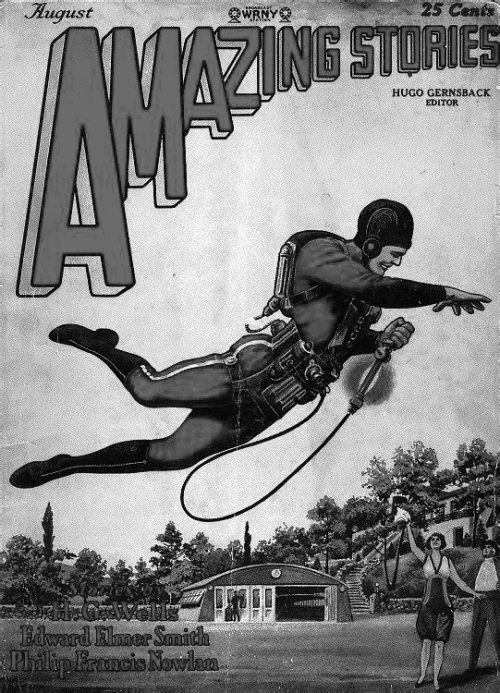
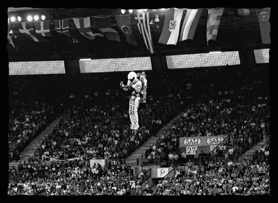
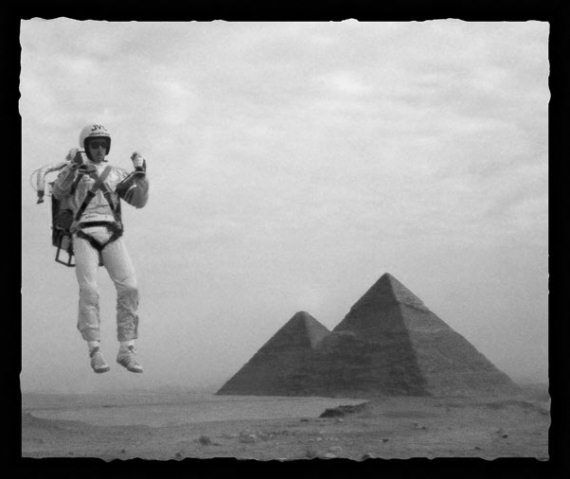

Отступление третье. Человек-ракета
20 апреля 2004 года 41-летний житель американского штата Техас Эрик Скотт с помощью своего ракетного ранца «Рокетбелт» взмыл в лондонское небо на высоту 51 метр, установив тем самым новый мировой рекорд. Полет занял всего 26 секунд, но и за это время «человек-ракета» успел сделать в воздухе несколько пируэтов. «Трудно описать чувство, когда отрываешься от земли. Это как мечта, которая наконец-то сбылась», – заявил Скотт после своего благополучного приземления.
Вообще-то индивидуальные ракетные (или реактивные, если хотите) ранцы, один из которых использовал Скотт во время своего рекордного полета, прямого отношения к космонавтике не имеют. Для того чтобы подняться в космос они слишком слабы. А для перемещения астронавтов в открытом космосе используются хотя и схожие, но иные устройства. Так что давайте рассматривать эту главу как некое отступление от избранной темы. Но, поверьте, это довольно интересная история и ее не стоит пропускать.
Но не буду более томить читателей, а расскажу по порядку о том, откуда, почему и как появились ракетные ранцы. Кстати, инженеры, которые за долгие годы работ в этом направлении сконструировали множество таких устройств, называют их по-разному. Каждый создатель стремится дать им собственное, отличное от других, название, хотя все ранцы используют одинаковые принципы действия и внешне очень похожи друг на друга, отличаясь лишь в мелочах. Вот перечень только тех названий, которые мне удалось найти, не особенно углубляясь в дебри поисков: «Смолл Рокет Лифт Дивайс» (маленький ракетный лифт), «Белл Рокет Белт» (ракетный пояс Белла), «Персонал Джетпак» (персональный реактивный ранец), «Рокет Бэкпак» (ракетный рюкзак), «Джет Пак» (реактивный ранец), «Джет Флайинг Белт» (реактивный летающий пояс), и так далее и тому подобное.
Мысль о возможности полета человека при помощи автономной реактивной системы, закрепленной на поясе или за плечами человека, появилась в конце 1920-х годов, когда начались активные эксперименты с ракетной техникой. Тогда регулярно появлялись сообщения не только о разработке все новых и новых ракет, но и о ракетных самолетах, ракетных автомобилях, ракетных санях и даже ракетных велосипедах. Этим «грешили», в основном, европейцы, но и в США от подобных новшеств не шарахались. Широко известны заезды в Нью-Йорке на ракетных велосипедах. Ну а уж Голливуд оказался в первых рядах тех, кто использовал ракеты для воплощения на экране самых сокровенных грез. Тогда же стала обсуждаться возможность полета по воздуху с помощью индивидуального ракетного устройства. Правда, в то время реализовать замысел никто не решился, а реактивными ранцами пользовались лишь герои фантастических книг и комиксов. Но, главное, зерно было брошено в почву. А когда оно должно было взойти – это уже зависело не от авторов идеи.
Первое упоминание о «человеке-ракете» относится к августу 1928 года, когда в американском журнале «Удивительные истории» был опубликован первый рассказ о Баке Роджерсе – «Армагеддон-2419». Герой этого произведения заснул и проснулся в XXV веке. По мысли автора – Филипа Фрэнсиса Нолана, в будущем земляне должны активно пользоваться индивидуальными средствами передвижения, в том числе и ракетными ранцами. Причем это будет столь обыденное средство передвижения, что никого не удивит.
Повесть Нолана имела оглушительный успех. Как результат, появились новые рассказы, комиксы, фильмы, рекламный образ. Скоро «Бак Роджерс» стал именем нарицательным в подростковой фантастической литературе США. Его приключения были столь популярны, что трудно было найти мальчишку, у которого на книжной полке не стояли бы журналы с описанием все новых и новых подвигов этого фантастического героя. Один из первых испытателей ракетных ранцев, американец Гарольд Грэм, вспоминал впоследствии, что и его детство прошло под знаком человека-ракеты.

Обложка журнала комиксов о человеке-ракете
Установить, кто первым занялся вопросом воплощения в реальность этой фантастической идеи, весьма сложно. По некоторым данным, немцы разрабатываали ее еще в 1930-х годах. Утверждается, что существует некий документальный фильм, где зафиксирован первый опыт использования ракетного ранца с достаточно жестким приземлением. Хотя, не исключено, что это постановка.
Также утверждается, что в годы Второй мировой войны в Германии была создана эксплуатационная модель, стоявшая на вооружении диверсантов Отто Скорцени. В литературе она упоминается как «пульсирующая труба Шмидта» (Schmidt pulse tube). Ну и совсем фантастические слухи той поры, что ракетные ранцы применялись при тренировках членов мифического «отряда космонавтов Скорцени».
Доподлинно неизвестно, вели немцы какие-либо работы в этом направлении или это только слухи, как и дисколеты, машина времени и прочие фантастические штучки. Хотя этот вопрос довольно интересен и требует дальнейшего изучения, как и многие другие тайны Третьего рейха.
В послевоенные годы люди-ракеты по-прежнему заполняли собой киноэкраны. Наиболее известный фильм той поры – «Человек-ракета», героем которого стал непобедимый коммандо Коди. Сейчас все спецэффекты, применявшиеся тогда на съемках, кажутся примитивными, а все нестыковки, подобные тросикам, на которых летает герой, видны невооруженным глазом. Но в свое время они восхищали многих зрителей.
«Отцом» ракетных ранцев считается американец Томас Мур, который в конце 1940-х годов сформулировал концепцию нового средства передвижения и предложил первый проект реактивного ранца. Только не надо путать Томаса Мура с Уинделлом Муром, работавшим в арсенале «Редстоун» и входившим в команду Вернера фон Брауна, а впоследствии создавшим первую эксплуатационную модель индивидуального транспортного средства с использованием реактивной тяги. Уинделл еще станет «фигурантом» этого рассказа.
Томас Мур окрестил свое изобретение «Джет Вест». Американская армия выделила ему 25 тысяч долларов на эти работы. Этих денег хватило, чтобы создать макет ракетного пояса, поэкспериментировать на стендах и рискнуть совершить в 1952 году свой первый и единственный испытательный полет. И хотя эксперимент прошел успешно, американские военные к тому времени уже потеряли интерес к работам Мура и от дальнейшего финансирования отказались.
Так бы и лежал ранец где-то в кладовке Мура, если бы в 1950-х годах еще в двух американских компаниях не заинтересовались проблемой создания индивидуальных средств передвижения с помощью реактивной тяги. В компании «Тиокол» эта разработка получила название «Проект «Грассхоппер» («Кузнечик»). Созданная двумя инженерами компании конструкция «Джампбелт» была продемонстрирована в 1958 году в Форт-Беннинге. Пилот сам управлял ранцем, включая и выключая двигатели с помощью ручек управления. Реактивное движение обеспечивал газообразный азот, помещенный в небольшие колбы, закрепленные в заплечном ранце. В дальнейших работах экспериментировали с пероксидом водорода. Это обеспечивало подъем человека над землей на высоту 7 метров и позволяло совершать управляемый полет на расстояние до 100 метров за 10 секунд. Или перемещаться со скоростью 45–50 километров в час на расстояние до 300 метров. Дальнейшие работы в «Тиоколе» были прекращены из-за отсутствия заказов. Там решили, что тратить деньги на работы, не пользующиеся спросом, бессмысленно.
Приблизительно в те же годы, когда над «Кузнечиком» работали в «Тиоколе», вопросом создания реактивных ранцев стали интересоваться в другой американской компании – «Белл Аэро-системс». Генератором идеи стал уже упоминавшийся выше Уинделл Мур. Участвуя в программе испытаний ракетных самолетов серии «Х» на базе ВВС США «Эдвардс» в штате Калифорния, он вместе с другим инженером компании, Джимом Пауэллом, приступил к исследованию этой проблемы. Очень скоро выяснилось, что все не так просто, как казалось вначале. Основной проблемой стал поиск тех мест человеческого тела, на которых следовало закрепить реактивные двигатели, чтобы обеспечить устойчивый полет. Тем не менее кое-какую информацию удалось получить, и спустя некоторое время инженеры занялись конструированием.
Как это не раз бывало в истории техники, любая идея должна «дозреть». Так получилось и с ракетным ранцем. В 1958 году Армия США наконец-то признала необходимость создания для своих нужд индивидуальных реактивных ранцев и объявило конкурс на такую разработку. Его выиграла калифорнийская компания «Аэроджет». Уже в следующем году инженер компании Ричард Пиплз совершил первый успешный полет с помощью устройства, названного «Аэропак». Однако дальнейшего продолжения работы в «Аэроджете» не получили, так как армейские чины переключили свое внимание на «Белл Аэросистемс», где в этом направлении были достигнуты большие успехи. В августе 1960 года Армия предоставила компании финансирование в рамках программы «Смолл Рокет Лифт Дивайс».
Вполне естественно, что директором новой программы стал все тот же Уинделл Мур. От армии работу курировал Роберт Грэм. Ракетные двигатели, установленные на ранце, получившем название «Рокетбелт», работали на кислороде и водороде.
Еще зимой 1958 года Мур впервые испытал прототип устройства на себе. Ему удалось оторваться от Земли и даже сделать несколько движений в воздухе. Нельзя сказать, что это было впечатляющим зрелищем, но начало было положено.
К концу 1960 года «Рокетбелт» был готов, и испытания начались. На первом этапе пилот с надетым ранцем фиксировался тросом, чтобы, не дай бог, не улететь и не пробить головой потолок, так как испытания шли в помещении. Первые 20 полетов совершил сам Мур. Были выявлены многие недостатки конструкции, которые регулярно устранялись, но появлялись новые. Вообще-то шел обычный процесс конструирования нового и уникального аппарата. Вероятно, Мур бы и дальше продолжал свою «летную» карьеру, если бы не события 17 февраля 1961 года. В тот день испытатель в ходе очередного «рейса» потерял контроль над двигателями, совершил неожиданный кульбит в воздухе и упал на землю, сломав колено.
Дальнейшие испытательные полеты продолжил Гарольд Грэм. Впервые в воздух он поднялся 1 марта, а потом совершил еще 35 полетов на страховочном тросе. То ли конструкция к тому времени стала совершеннее, то ли Грэм мог лучше координировать свои движения, чем это получалось у Мура, но со стороны его полет выглядел даже грациозно.
А 20 апреля 1961 года в аэропорту Ниагара-Фоллс в штате Нью-Йорк состоялся первый самостоятельный полет. За этим историческим событием наблюдали около 20 человек, участвовавших в проекте. Грэм включил двигатель, поднялся в воздух на 50 сантиметров и полетел над землей со скоростью 20 километров в час. Преодолев дистанцию в 40 метров, что всего на 3 метра меньше, чем во время первого полета самолета братьев Райт, он опустился на летное поле. Все испытание длилось 13 секунд.
Через 1,5 месяца, 8 июня, в Форт-Этис в штате Виргиния по требованию Армии состоялась первая публичная демонстрация устройства. К тому времени Грэм уже совершил 28 свободных полетов и приобрел большой опыт в управлении ранцем «Рокетбелт». Сотни зрителей с восхищением и страхом наблюдали за тем, как пилот пролетел над армейским грузовиком. А потом за полетом Грэма на лужайке перед зданием Пентагона в Вашингтоне смогли наблюдать около 3 тысяч сотрудников военного ведомства.
Вслед за этим на компанию «Белл» посыпались заказы. Но это были запросы от частных лиц, которые тут же отклонили в ожидании большого правительственного заказа. А вот его-то и не последовало. Причина этого неизвестна, хотя многие специалисты не раз писали об очевидных преимуществах ракетных ранцев при проведении боевых операций в Южной Америке, Азии и Африке, чем активно в 1960-х годах, да и позже, занималась американская армия. Вероятно, отказ от закупки «Рокетбелт» следует искать в сложности управления ранцем и необходимости долгого обучения солдат обращению с ним, а также краткой продолжительности полета.
В течение нескольких следующих лет компания «Белл аэро-системс» пыталась продвинуть свою разработку на рынок. Показательные полеты состоялись во многих странах мира, где за ними наблюдали более 5 миллионов человек. Наиболее эффектным следует признать «выступление» в Форт-Брэгге в штате Северная Каролина, когда Грэм стартовал с борта судна и опустился на землю прямо перед президентом США Джоном Кеннеди. Эффект был потрясающим. Кеннеди знал о предстоящем полете, но, как сказал журналистам, даже не мог себе представить, что это будет такое захватывающее зрелище. Однако даже восхищение американского президента не изменило положение дел с заказами на устройство. Американские военные чиновники решили не тратить на него деньги налогоплательщиков.

Полет с помощью ракетного ранца
Показательные полеты, тем временем, продолжались. Всего их состоялось 83. Самый продолжительный длился 21 секунду, за которую было преодолено 120 метров с максимальной скоростью 55 километров в час.
Несмотря на отсутствие интереса у американских военных, в «Белл аэросистемс» продолжили работы над ракетными ранцами. В конце 1962 года был сконструирован и изготовлен новый вариант «Рокетбелт» – тандем, который «осваивали» 37-летний Роберт Куртер, имевший к тому времени 20-летний опыт в авиации, и 19-летний выпускник средней школы Питер Кидзерски. Но и эта разработка использовалась только для показательных выступлений. Куртер и Кидзерски на пару совершили около 150 полетов. Они посетили Германию, Аргентину, Швецию, Бразилию, Испанию и Мексику. Только с 12 по 18 февраля 1963 года в Мехико они совершали в среднем по четыре полета в день. В апреле того же года в Бербэнке в штате Калифорния на ежегодной молодежной ярмарке за их полетами наблюдали около 300 тысяч молодых людей.
Отвергнутый армией ракетный ранец не потерял своей привлекательности для киношников и «массовиков-затейников». В 1965 году его продемонстрировали в знаменитом сериале о Джеймсе Бонде в фильме «Шаровая молния». Те, кто смотрел этот фильм, должны помнить, как в одном из эпизодов Бонд надевает ракетный ранец и говорит, что без этого устройства мужчина не может считать себя джентльменом. Но среди военных джентльмены встречаются редко, поэтому они и не приняли «Рокетбелт» на вооружение, оставив его для выступлений перед публикой, которой это очень нравилось.
Несмотря на фиаско, создатель реактивного ранца Уинделл Мур продолжал заниматься совершенствованием своего изобретения до 1969 года, когда неожиданно умер в возрасте 51 года. Вслед за его кончиной в «Белл аэросистемс» окончательно потеряли интерес к этой «игрушке» и в январе 1970 года уступили лицензию на продажу и производство устройства, к тому времени звавшемуся «Белл Джет Белт», компании «Уильямс Интернэшнл», которая взялась за развитие ранца с целью увеличить продолжительность полета. Судя по полному отсутствию информации на этот счет, работы особым успехом не увенчались.
С тех пор реактивный ранец стал экзотикой. Лишь изредка его используют для его развлечения публики в перерывах на футбольных матчах, в рекламных шоу или для трюков в кино. Правда, его видели в 1984 году в Лос-Анджелесе на церемонии открытия XXIII Олимпийских игр.

Полет на фоне пирамид
Новый всплеск интереса к индивидуальным средствам передвижения по воздуху с использованием реактивной тяги прорезался в 1990-х годах, когда группой американских инженеров была разработана усовершенствованная версия, получившая наименование «РБ 2000 Рокет Белт». Модифицированный «пояс» позволял находиться в воздухе 30 секунд вместо 20 секунд, как его предшественник. Увеличение продолжительности полета было достигнуто за счет увеличения количества топлива, в качестве которого использовалась смесь пероксида водорода с газообразным азотом. Примесь нитрата серебра играла при этом роль катализатора.
Сам ранец особым конструктивным изменениям не подвергся. Движение обеспечивалось реактивной струей из двух согнутых труб за спиной пилота. При этом центр масс человека находится чуть ниже сопел, поэтому при полете сохраняется вертикальное положение тела. Две ручки управления, жестко сцепленные с ранцем, размещались впереди, как подлокотники у кресла. Под правой рукой находился регулятор мощности, управляющий реактивной струей. Изменяя направление сопел, пилот мог не только подниматься на некоторую высоту, но и совершать горизонтальный полет. «РБ 2000 Рокет Белт» позволял развивать скорость до 161 километра в час.
Да, еще надо отметить, что полеты с ранцем необходимо совершать только в специальном костюме, отдаленно напоминающем скафандр или жаростойкий костюм пожарного. Иначе пилот рискует обжечь свои «филейные» части.
Пару лет о «РБ 2000 Рокет Белт» много писали, предрекая ему хорошие перспективы. Однако в 1995 году он исчез из поля зрения специалистов и публики. Не исключено, что работа над ним продолжалась и дальше, если бы не произошла неприглядная история: одного из создателей устройства обвинили в убийстве другого. И хотя доказать состав преступления не удалось, деньги конструкторам давать перестали.
Сейчас о ракетных ранцах можно услышать очень редко, только когда устанавливаются новые рекорды или разгораются какие-нибудь скандалы. А те ранцы, которые когда-то сделал Уинделл Мур, можно увидеть в Нью-йоркском университете и музее университетского городка Буффало, где их хранят в экспозиции достижений технической мысли человека.
Но, как мне кажется, история ракетных ранцев еще далека от своего завершения, и у них есть будущее. Может быть, пройдет всего несколько лет, и мы вновь увидим их в действии. Причем не только на показательных выступлениях или на киноэкране, но и в повседневной жизни. Стопроцентной гарантии этого нет, но надеяться хочется. Уж больно привлекательна эта «игрушка».